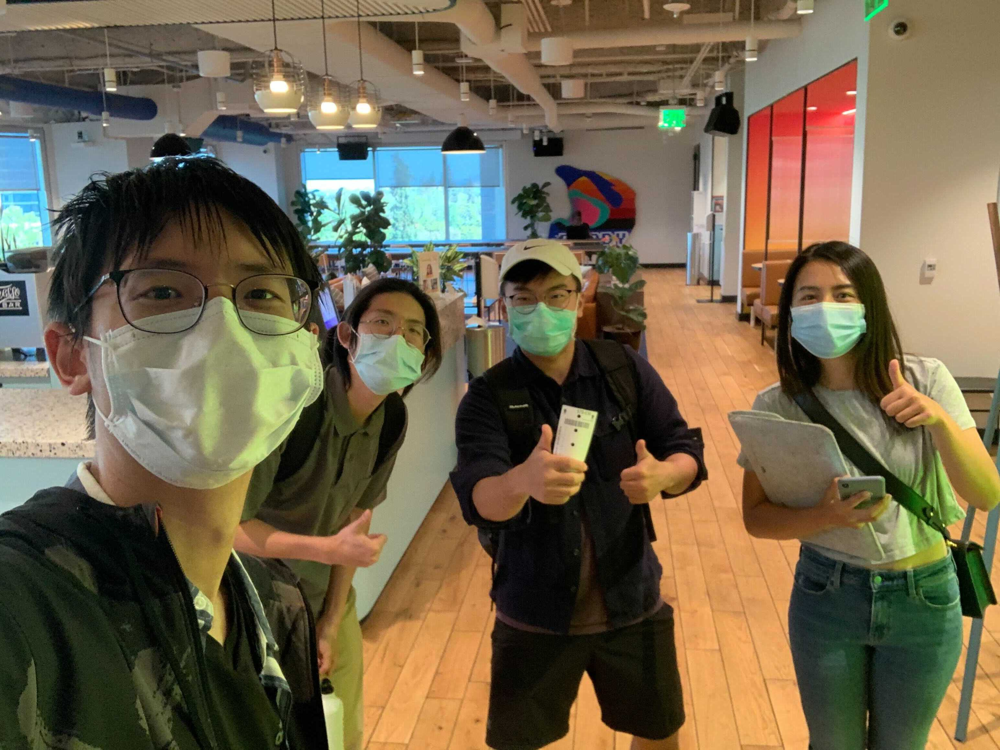

My story of designing WeWave ❋ My story of designing WeWave ❋ My story of designing WeWave ❋ My story of designing WeWave ❋ My story of designing WeWave ❋ My story of designing WeWave ❋
WeWave is a mobile and desktop website that provides the world’s first draw to search engines for stocks and cryptos
My Role
In my role as the UI and Visual designer for WeWave, I was responsible for leading the design of both the mobile and desktop web versions of the product. I worked with a team of product designers, product managers, researchers, financial advisors, and engineers to uncover insights and translate concepts into features that address user needs.
Team
Adwin Jahn, Founder, Software Engineer
Eugene Jahn, Co-Founder, Software Engineer
Yetta Jiang, UI/UX Designer
Aid Idrizovic, Software Engineer
Sara Valenzuela, Brand Marketing Lead
Iris Lin, Project Manager
Tai-Shain Pei, QA Manager
Eddie, Product Researcher & Business Analysis
Timeline
2021 - 2022
Deliverables
Concept Development
Wireframe
User Experience
User Interface
Visual Design
Tools
Figma
Adobe Illustrator
Adobe Indesign
Adobe Photoshop
Adobe After Effects
Adobe Premiere Pro
How technology makes life easier?
Technology has the potential to make life easier in many ways by automating tasks, providing access to information and resources, and making it easier to connect and communicate with others. In the case of WeWave, a mobile and desktop website that provides the ability to search for stocks and cryptocurrencies using drawings, technology is being used to provide a new and innovative way for users to access the specific information they are looking for. This could potentially save time and make it easier for users to find the data they need to make informed decisions.
Define the Problem

The Challenge
At the beginning of the project, we were a team of 5 people that wants to build the first draw to search stock screener for traders on the stock market. The idea came for the AI experiment “QuickDraw” made by Google. This involved designing the WeWave website from zero to finish and how we could use the idea to deliver the product that we wanted to build. With few-month timelines, we focused on delivering the draw, search, and match technical patterns for the entire US stock market and all cryptocurrencies.
The Approach
Our lack of financial knowledge of the stock market we needed to understand the nature of how traders’ minds and what’s the culture of the stock market quickly. We approached all aspects of the project collaboratively and spent most of our time working with experienced traders and joining the stock market community interacting with traders.
Throughout the project, we conducted user research and defined the concept of the design. This approach was to understand the fundamentals and technical process.
To access our prospective users, we ran online user interviews with experienced and non-experienced traders across the world. This allowed us to quickly identify the day-to-day challenges of users’ pain points.
The Process
The Discovery
We conducted user and market research to drive our planning phase.
Here is the key problem that we discovered:
There are 100 million active users learning and using technical analysis, but only 1% of traders publish trading ideas and the rest just watched. The reason is the steep learning curve and coding knowledge required. The existing technical analysis tools are hard to approach.
Our Vision
Our vision was to create an investing platform that makes it easy and simple to observe, analyze, and interpret data on stocks and cryptocurrencies in one user-friendly environment that allowed users to save time, get more trading ideas, have no coding required, and be a beginner-friendly platform. With the WeWave database, we provide fast and accurate data analysis for our users.
The Requirementsn
Designing for what users want to use
The Platform
Introducing WeWave
WeWave.app stands as the world's initial AI-driven platform for matching stocks for investment. Users can leverage the feature to draw their preferred stock pattern, consequently locating stocks that match the desired trend. Alternatively, users can search for tickers to find stocks with similar patterns within the US market and all cryptocurrencies. Furthermore, the platform offers AI-driven technical analysis tools that are powered by real-time data.
The Framework - How we got here?
At the outset of the project, we generated multiple solutions through a rigorous process of digital wireframing, presenting, collaborating, and validating within the team. My particular focus lay on designing the UI for both mobile and desktop platforms, as well as ensuring a smooth user experience upon completion of the product.
The Outcomes
Turning concepts into designs - Design System
Font, color, and button every detail matters! I spent more time defending the design decisions than solving the design problem.
MVP
After validating our digital prototype we mad iterations to our design, and moved into Hi-Fi phase.
The Execution
Bringing it all to life
During the summer of 2021, we commenced the rollout of WeWave to both mobile and desktop web platforms. After the completion of MVP-A, we continued to incorporate additional features and data. Check out the WeWave App by visiting our website.
User Feedback
After validating our digital prototype we mad iterations to our design, and moved into Hi-Fi phase.
The Reflections
What I learned from this
I take great pride in having contributed to a large-scale project right from its inception. I extend my gratitude to my team for their unwavering support and trust in me throughout the process. This being my first UI/UX project, working alongside cross-functional teams such as engineers, project managers, and the marketing team, and delivering the final output, was a tremendous learning experience for me. I challenged myself to think of numerous iterations, presented them to the teams, and tested them with users. It is heartening to see that WeWave has now been launched as a live product, with over 10,000 registered users. Moving forward, I plan to devote more time to responsive web design for future enhancements.
Launching is only the beginning
WeWave App is continually developing new technical analysis features and enhancing its real-time charting capabilities.